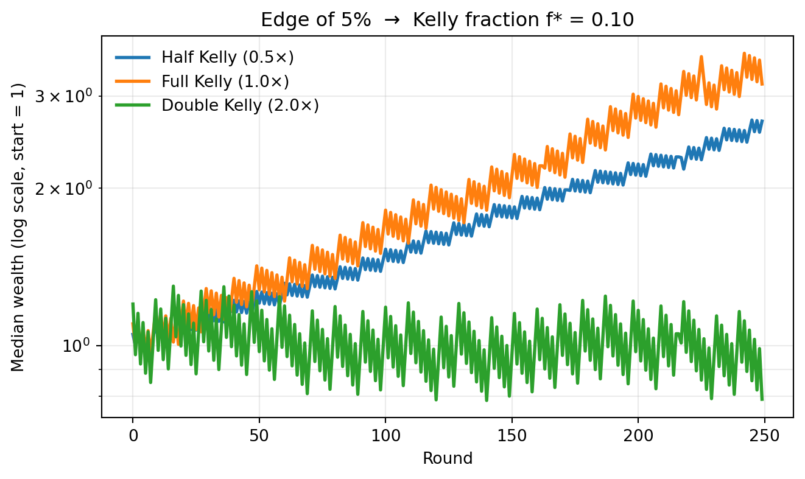
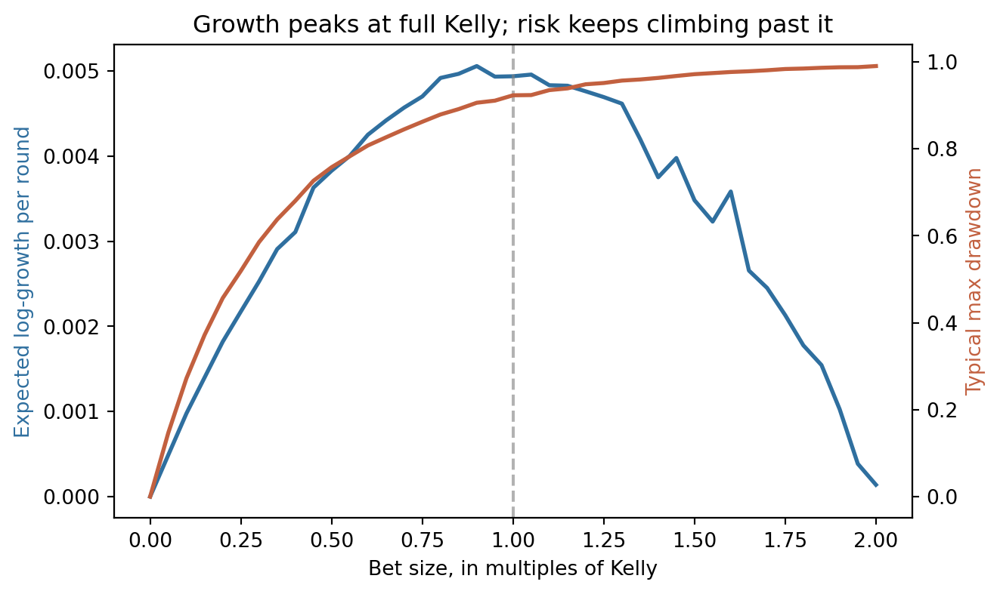

The Kelly criterion, or why information theory has opinions about your portfolio
quant finance
information theory
kelly
Deriving the log-optimal bet size, simulating it, and seeing why practitioners quietly bet half.
Author
Jordan McKittrick
Published
May 29, 2026
There’s a particular flavor of overconfidence that shows up the first time someone proves an edge. The bet is favorable, so — surely — the move is to push in as many chips as possible? The trouble is that “favorable on average” and “favorable to your long-run wealth” are different statements, and the gap between them is exactly the thing John Kelly worked out in 1956 while sitting in a building full of information theorists (Kelly 1956).
The setup
Consider the simplest possible repeated bet. Each round you wager a fraction \(f \in [0, 1]\) of your current wealth on a proposition that pays \(b\)-to-one and wins with probability \(p\) (with \(q = 1 - p\)). After one round your wealth is multiplied by either \(1 + bf\) (a win) or \(1 - f\) (a loss).
Because outcomes compound, the quantity that controls your fate over many rounds isn’t the arithmetic average return — it’s the expected logarithmic growth rate
For an even-money bet (\(b = 1\)) this collapses to the famously tidy \(f^{*} = p - q\): bet your edge, nothing more.
The interpretation is what makes it beautiful. \(g(f)\) is, up to a sign, a relative entropy — the very same object that governs how fast you can transmit bits over a noisy channel. Optimal betting and optimal coding turn out to be the same optimization wearing different clothes.
Why not just bet more?
The catch lives in the curvature of the logarithm. Over-betting doesn’t merely reduce your growth rate — past a point it makes it negative, so you go broke almost surely despite holding a positive-expectation edge. Let’s watch it happen.
Code
import numpy as npimport matplotlib.pyplot as pltrng = np.random.default_rng(42)# Favorable even-money bet: 55% win probability, pays 1:1.p, b =0.55, 1.0f_star = (b * p - (1- p)) / b # Kelly fraction = 0.10n_rounds =250n_paths =2000def simulate(fraction): wins = rng.random((n_paths, n_rounds)) < p step = np.where(wins, 1+ b * fraction, 1- fraction)return np.cumprod(step, axis=1) # wealth, starting from 1strategies = {"Half Kelly (0.5×)": 0.5* f_star,"Full Kelly (1.0×)": 1.0* f_star,"Double Kelly (2.0×)": 2.0* f_star,}fig, ax = plt.subplots(figsize=(7, 4.2))for label, frac in strategies.items(): wealth = simulate(frac) ax.plot(np.median(wealth, axis=0), label=label, linewidth=2)ax.set_yscale("log")ax.set_xlabel("Round")ax.set_ylabel("Median wealth (log scale, start = 1)")ax.set_title(f"Edge of {100*(p-0.5):.0f}% → Kelly fraction f* = {f_star:.2f}")ax.legend(frameon=False)ax.grid(True, which="both", alpha=0.25)fig.tight_layout()plt.show()

Median wealth trajectories under different fractions of the Kelly bet.
Full Kelly grows the fastest in the median. Double Kelly — betting twice your edge — has a positive expected return per round and yet its typical trajectory slumps toward zero, because the expected log growth rate has gone negative. That distinction is the entire lesson.
So why do practitioners bet half?
Full Kelly is growth-optimal, but it is also brutally volatile: it tolerates drawdowns that would get a real fund manager fired. Fractional Kelly trades a little growth for a lot of calm.
Code
fractions = np.linspace(0.0, 2.0, 41) * f_starresults = []for frac in fractions: w = simulate(frac) log_growth = np.mean(np.log(w[:, -1])) / n_rounds max_dd = np.median(1- w.min(axis=1) / np.maximum.accumulate(w, axis=1).max(axis=1)) results.append((frac / f_star, log_growth, max_dd))mult, growth, dd = np.array(results).Tfig, ax1 = plt.subplots(figsize=(7, 4.2))ax1.plot(mult, growth, color="#2f6f9f", linewidth=2, label="log-growth rate")ax1.axvline(1.0, color="grey", linestyle="--", alpha=0.6)ax1.set_xlabel("Bet size, in multiples of Kelly")ax1.set_ylabel("Expected log-growth per round", color="#2f6f9f")ax2 = ax1.twinx()ax2.plot(mult, dd, color="#c2603f", linewidth=2, label="typical max drawdown")ax2.set_ylabel("Typical max drawdown", color="#c2603f")ax1.set_title("Growth peaks at full Kelly; risk keeps climbing past it")fig.tight_layout()plt.show()

Growth is flat-topped near \(f^{*}\) — you give up almost nothing by backing off to, say, half Kelly — while drawdown rises steadily the whole way. Sacrificing a sliver of theoretical growth to roughly halve your worst-case pain is a trade most people take happily. The math says bet your edge; survival says bet a little less.
Where this goes next
The single-bet story generalizes: with many correlated assets, the log-optimal portfolio becomes a constrained optimization that looks a lot like a Markowitz mean–variance problem viewed through a logarithmic lens — a thread I’ll pull on in a future post.
References
Kelly, J. L. 1956. “A New Interpretation of Information Rate.”Bell System Technical Journal 35 (4): 917–26.
Source Code
---title: "Betting Your Whole Bankroll Feels Great (Until It Doesn't)"subtitle: "The Kelly criterion, or why information theory has opinions about your portfolio"date: 2026-05-29categories: [quant finance, information theory, kelly]description: "Deriving the log-optimal bet size, simulating it, and seeing why practitioners quietly bet half."bibliography: references.bibimage: thumbnail.png---There's a particular flavor of overconfidence that shows up the first time someoneproves an edge. The bet is favorable, so — surely — the move is to push in as manychips as possible? The trouble is that "favorable on average" and "favorable to yourlong-run wealth" are different statements, and the gap between them is exactly thething **John Kelly** worked out in 1956 while sitting in a building full ofinformation theorists [@kelly1956].## The setupConsider the simplest possible repeated bet. Each round you wager a fraction$f \in [0, 1]$ of your current wealth on a proposition that pays $b$-to-one andwins with probability $p$ (with $q = 1 - p$). After one round your wealth ismultiplied by either $1 + bf$ (a win) or $1 - f$ (a loss).Because outcomes *compound*, the quantity that controls your fate over many roundsisn't the arithmetic average return — it's the **expected logarithmic growth rate**$$g(f) \;=\; p \,\ln(1 + bf) \;+\; q \,\ln(1 - f).$$Maximizing wealth over the long run means maximizing $g$. Differentiating andsetting $g'(f) = 0$,$$g'(f) \;=\; \frac{pb}{1 + bf} - \frac{q}{1 - f} \;=\; 0\qquad\Longrightarrow\qquad\boxed{\,f^{*} = \frac{bp - q}{b}\,}.$$For an even-money bet ($b = 1$) this collapses to the famously tidy$f^{*} = p - q$: bet your edge, nothing more.The interpretation is what makes it beautiful. $g(f)$ is, up to a sign, arelative entropy — the very same object that governs how fast you can transmitbits over a noisy channel. Optimal betting and optimal coding turn out to be thesame optimization wearing different clothes.## Why not just bet more?The catch lives in the curvature of the logarithm. Over-betting doesn't merelyreduce your growth rate — past a point it makes it *negative*, so you go broke**almost surely** despite holding a positive-expectation edge. Let's watch ithappen.```{python}#| code-fold: show#| fig-cap: "Median wealth trajectories under different fractions of the Kelly bet."import numpy as npimport matplotlib.pyplot as pltrng = np.random.default_rng(42)# Favorable even-money bet: 55% win probability, pays 1:1.p, b =0.55, 1.0f_star = (b * p - (1- p)) / b # Kelly fraction = 0.10n_rounds =250n_paths =2000def simulate(fraction): wins = rng.random((n_paths, n_rounds)) < p step = np.where(wins, 1+ b * fraction, 1- fraction)return np.cumprod(step, axis=1) # wealth, starting from 1strategies = {"Half Kelly (0.5×)": 0.5* f_star,"Full Kelly (1.0×)": 1.0* f_star,"Double Kelly (2.0×)": 2.0* f_star,}fig, ax = plt.subplots(figsize=(7, 4.2))for label, frac in strategies.items(): wealth = simulate(frac) ax.plot(np.median(wealth, axis=0), label=label, linewidth=2)ax.set_yscale("log")ax.set_xlabel("Round")ax.set_ylabel("Median wealth (log scale, start = 1)")ax.set_title(f"Edge of {100*(p-0.5):.0f}% → Kelly fraction f* = {f_star:.2f}")ax.legend(frameon=False)ax.grid(True, which="both", alpha=0.25)fig.tight_layout()plt.show()```Full Kelly grows the fastest in the median. Double Kelly — betting *twice* youredge — has a positive expected return per round and yet its typical trajectoryslumps toward zero, because the expected *log* growth rate has gone negative. Thatdistinction is the entire lesson.## So why do practitioners bet half?Full Kelly is growth-optimal, but it is also brutally volatile: it toleratesdrawdowns that would get a real fund manager fired. **Fractional Kelly** trades alittle growth for a lot of calm.```{python}#| code-fold: truefractions = np.linspace(0.0, 2.0, 41) * f_starresults = []for frac in fractions: w = simulate(frac) log_growth = np.mean(np.log(w[:, -1])) / n_rounds max_dd = np.median(1- w.min(axis=1) / np.maximum.accumulate(w, axis=1).max(axis=1)) results.append((frac / f_star, log_growth, max_dd))mult, growth, dd = np.array(results).Tfig, ax1 = plt.subplots(figsize=(7, 4.2))ax1.plot(mult, growth, color="#2f6f9f", linewidth=2, label="log-growth rate")ax1.axvline(1.0, color="grey", linestyle="--", alpha=0.6)ax1.set_xlabel("Bet size, in multiples of Kelly")ax1.set_ylabel("Expected log-growth per round", color="#2f6f9f")ax2 = ax1.twinx()ax2.plot(mult, dd, color="#c2603f", linewidth=2, label="typical max drawdown")ax2.set_ylabel("Typical max drawdown", color="#c2603f")ax1.set_title("Growth peaks at full Kelly; risk keeps climbing past it")fig.tight_layout()plt.show()```Growth is flat-topped near $f^{*}$ — you give up almost nothing by backing off to,say, half Kelly — while drawdown rises steadily the whole way. Sacrificing a sliverof theoretical growth to roughly halve your worst-case pain is a trade most peopletake happily. The math says bet your edge; survival says bet a little less.## Where this goes nextThe single-bet story generalizes: with many correlated assets, the log-optimalportfolio becomes a constrained optimization that looks a lot like a Markowitzmean–variance problem viewed through a logarithmic lens — a thread I'll pull on ina future post.---### References::: {#refs}:::